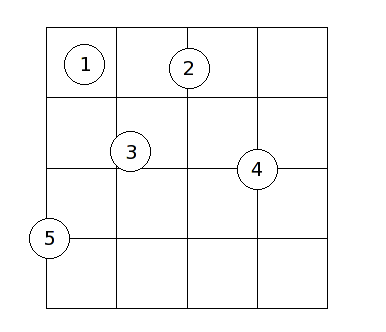

Input: cointoss.in
Output: cointoss.out
In a popular carnival game, a coin is tossed onto a table with an area that is covered with square tiles in a grid. The prizes are determined by the number of tiles covered by the coin when it comes to rest: the more tiles it covers, the better the prize. In the following diagram, the results from five coin tosses are shown:

In this example:
Notice that it is acceptable for a coin to land on the boundary of the playing area (coin 5). In order for a coin to cover a tile, the coin must cover up a positive area of the tile. In other words, it is not enough to simply touch the boundary of the tile. The center of the coin may be at any point of the playing area with uniform probability. You may assume that (1) the coin always comes to a rest lying flat, and (2) the player is good enough to guarantee that the center of the coin will always come to rest on the playing area (or the boundary).
The probability of a coin covering a certain number of tiles depends on the tile and coin sizes, as well as the number of rows and columns of tiles in the playing area. In this problem, you will be required to write a program which computes the probabilities of a coin covering a certain number of tiles.
The first line of input is an integer specifying the number of cases to follow. For each case, you will be given 4 integers m, n, t, and c on a single line, separated by spaces. The playing area consists of m rows and n columns of tiles, each having side length t. The diameter of the coin used is c. You may assume that 1 <= m, n <= 5000, and 1 <= c < t <= 1000.
For each case, print the case number on its own line. This is followed by the probability of a coin covering 1 tile, 2 tiles, 3 tiles, and 4 tiles each on its own line. The probability should be expressed as a percentage rounded to 4 decimal places. Use the format as specified in the sample output. You should use double-precision floating-point numbers to perform the calculations. "Negative zeros" should be printed without the negative sign.
Separate the output of consecutive cases by a blank line.
3 5 5 10 3 7 4 25 20 10 10 10 4
Case 1: Probability of covering 1 tile = 57.7600% Probability of covering 2 tiles = 36.4800% Probability of covering 3 tiles = 1.2361% Probability of covering 4 tiles = 4.5239% Case 2: Probability of covering 1 tile = 12.5714% Probability of covering 2 tiles = 46.2857% Probability of covering 3 tiles = 8.8293% Probability of covering 4 tiles = 32.3135% Case 3: Probability of covering 1 tile = 40.9600% Probability of covering 2 tiles = 46.0800% Probability of covering 3 tiles = 2.7812% Probability of covering 4 tiles = 10.1788%